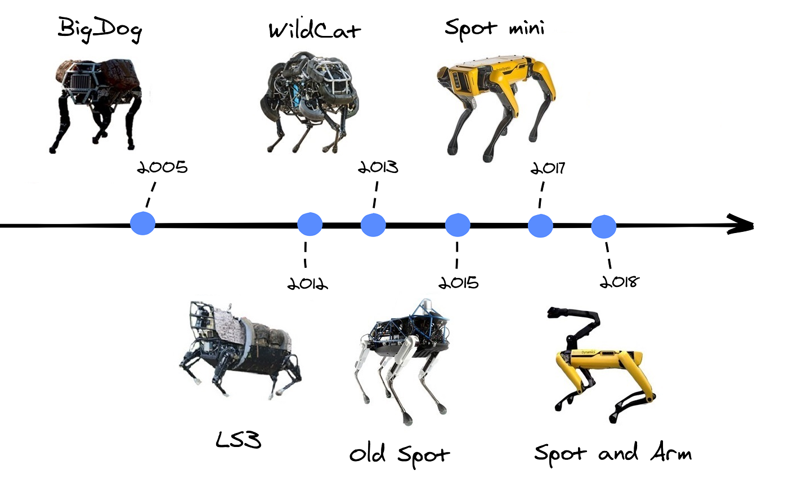

Роботы-собаки Boston Dynamics поступили в продажу
Американская компания Boston Dynamics объявила о начале свободных
коммерческих продаж своего четвероногого робота Spot. Цена - 74,5 тысячи долларов.
Об этом сообщается в официальном пресс-релизе.
На сайте компании открылся онлайн-магазин, где можно приобрести модель Spot Explorer по цене 74,5
тысячи долларов. Еще две модели Spot Enterprise и Spot Academic доступны по предзаказу.
Ранее роботы-собаки Boston Dynamics поставлялись
только для выборочных военных компаний, теперь их может приобрести любая компания, но лишь на территории США.
Для иностранных покупателей предполагается аренда робота на договорных условиях. Доставка робота
после заказа займет от шести до восьми недель.

Do You Love Me?
"Видео было записано перед новым годом, что-бы поднять всем настроение"
Для многих робот — просто компьютер, который раздает команды механизмам и получает обратную связь при помощи сенсоров. В реальности, с одной стороны механизмами управляет компьютер, а с другой — действуют гравитация, трение, закон сохранения импульса и вся остальная бессердечная физика. Чтобы робот мог нормально работать за пределами лаборатории, алгоритмы, механика и окружающая среда должны гармонично взаимодействовать. В Boston Dynamics добиваются этого, постепенно совершенствуя роботов. Инженеры компании собирают прототип, прогоняют его через серии практических тестов, и на основе полученных данных проектируют новую версию.

Они начинают с конструкций на базе заводских модулей, и поколение за поколением продвигаются ко все более сложному кастомному дизайну, рассчитанному на 3D-печать.
Boston Dynamics получили положительную реакцию
от клиентов и спонсоров.
После этого они решили: «Хорошо, нужно завести свой канал на YouTube».